Clinical Approach to the Hip Joint
- The hip is the most stable joint in the body: a ball-and-socket synovial joint where more than half the femoral head sits in the acetabulum, held by stout spiral ligaments. It gives up some mobility for stability, the opposite trade from the shoulder.
- Iliofemoral ligament ("Y ligament of Bigelow"): front and top, the strongest ligament in the body, limits extension. Pubofemoral: front and bottom, limits abduction. Ischiofemoral: back. Their spiral screws the head into the socket in extension, which allows "quiet" standing.
- Blood to the femoral head runs mainly from the medial circumflex femoral artery (with the lateral circumflex), up the neck through retinacular arteries. The artery of the ligament of the head matters only in children. So a femoral neck fracture or a posterior dislocation risks avascular necrosis.
- A "hip fracture" is a proximal femur fracture: common, and 25% of patients die within a year. Risk = falls risk + osteoporosis risk. Picture: a fall, groin or lateral upper thigh pain, can't bear weight, the leg shortened, externally rotated and abducted. Suspect it in the elderly even when pain or trauma is minimal. AP pelvis and hip x-ray, then CT if still suspicious.
- Three types: femoral neck (subcapital), intertrochanteric, subtrochanteric. Almost everyone gets surgery within 24–48 hours to get them moving. Displaced neck → arthroplasty (hemi or total). Inter- and subtrochanteric → an intramedullary nail.
- After surgery, the complications all come from immobility: VTE (LMWH for 14–30 days), pneumonia (a common cause of death), atrophy, infection and UTI, delirium, pressure sores. Mobilize early, prevent the next fall, and treat the osteoporosis.
Learning Objectives
- Identify the bones and landmarks of the proximal lower extremity and the features of the hip joint that make it stable.
- Describe the blood supply of the femoral head and why fractures and dislocations threaten it.
- Outline an approach to a suspected hip fracture: presentation, imaging, fracture types, management and post-operative care.
Dr. Charys Martin (osteology and joint features of the hip, 30 minutes) and Dr. Caitlin Cassidy (hip fractures, 26 minutes); the deck also credits Dr. Jordan Vanderende. About 56 minutes in all. It's the foundation for the Gluteal Region & Thigh and Thursday's Clinical Approach to Hip Pain, and prep for Friday's Hip & Thigh lab.
Osteology and Joint Features of the Hip
Dr. Martin's recording and its knowledge checks.
The Hip Bone
Three bones, ilium, ischium and pubis, fuse into the hip bone, and all three meet in the acetabulum, which articulates with the femoral head.
| Bone | Landmark | Why it matters |
|---|---|---|
| Ilium: the largest part; top of the acetabulum | ||
| Iliac crest | Its top sits at L4: the landmark for a lumbar puncture | |
| ASIS, AIIS, PSIS, PIIS | The anterior and posterior, superior and inferior iliac spines; the PIIS forms the top of the greater sciatic notch | |
| Greater sciatic notch | Turned into the greater sciatic foramen by the sacrotuberous and sacrospinous ligaments: the doorway from pelvis to gluteal region | |
| Ischium: posteroinferior; back of the acetabulum | ||
| Ischial spine | Anchors the sacrospinous ligament | |
| Ischial tuberosity | What you sit on; the hamstrings arise here | |
| Lesser sciatic notch | Becomes the lesser sciatic foramen, from the gluteal region into the perineum | |
| Pubis: anteromedial; front of the acetabulum | ||
| Pubic tubercle | Anchors the inguinal ligament | |
| Superior and inferior rami | With the ischium, they ring the obturator foramen (covered by the obturator membrane; the obturator nerve and vessels pass through) | |
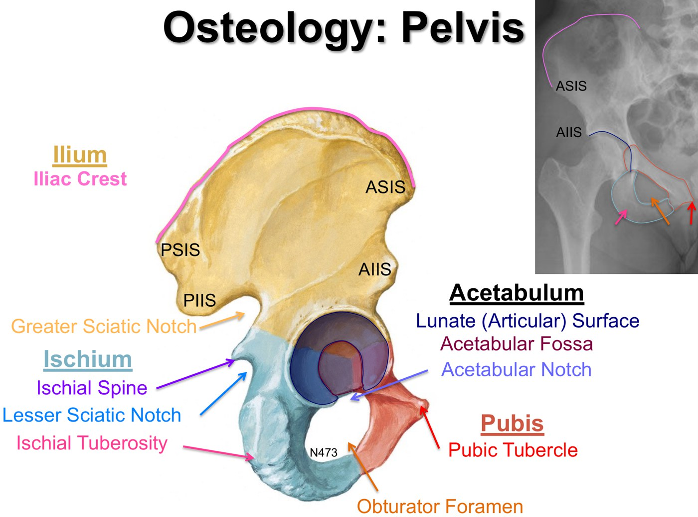
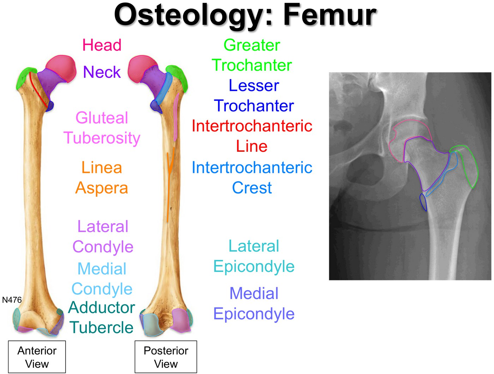
The femur. Slide from the deck (Netter).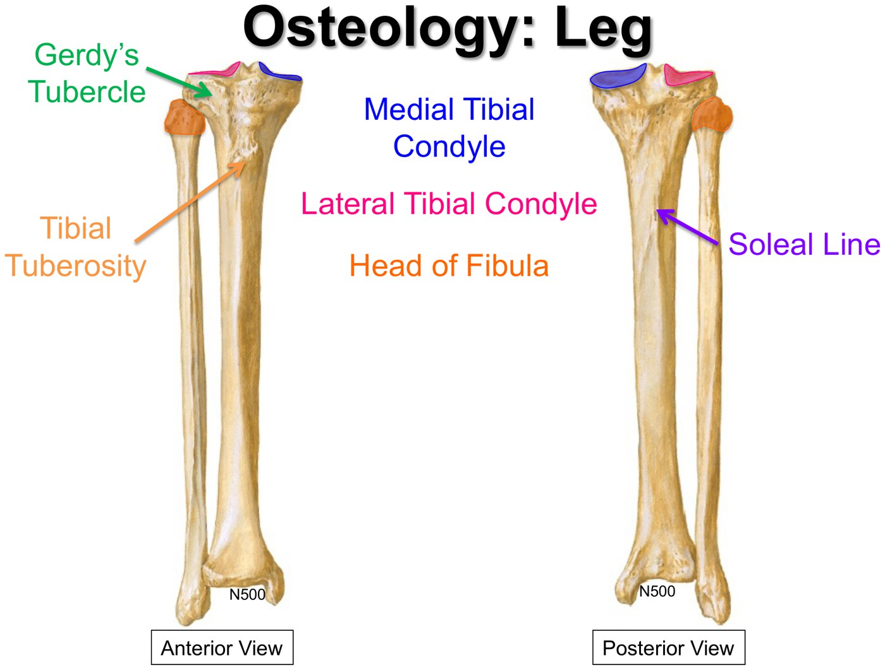
The tibia and fibula. Slide from the deck (Netter).The femur is the largest bone in the body and carries weight from the hip to the tibia. The tibia is the leg's weight-bearing bone (its two condyles form the tibial plateau; the patellar ligament ends on the tibial tuberosity). The fibula bears no weight.
The Hip Joint
A ball-and-socket synovial joint, multiaxial. It's the most stable joint in the body because of (1) its congruent fit (more than 50% of the femoral head sits in the acetabulum), (2) stout ligaments, including the strongest in the body, and (3) a thick cuff of muscle for dynamic support. It sacrifices some mobility for that stability; the glenohumeral joint does the reverse.
| Structure | Role |
|---|---|
| Acetabular labrum | Fibrocartilage rim that deepens the socket |
| Transverse acetabular ligament | Bridges the gap in the labrum at the acetabular notch |
| Ligament of the head of the femur | Carries the artery of the ligament of the head; gives no real strength |
| Joint capsule | Attaches to the intertrochanteric line in front but not to the femur behind; its inferior fibres wind round the back of the neck. Its thickenings are the three ligaments below. |
| Ligament | Where | Job |
|---|---|---|
| Iliofemoral ("Y ligament of Bigelow") | Anterior and superior | Strongest ligament in the body; limits extension |
| Pubofemoral | Anterior and inferior | Limits abduction |
| Ischiofemoral | Posterior | Strengthens the back of the joint |
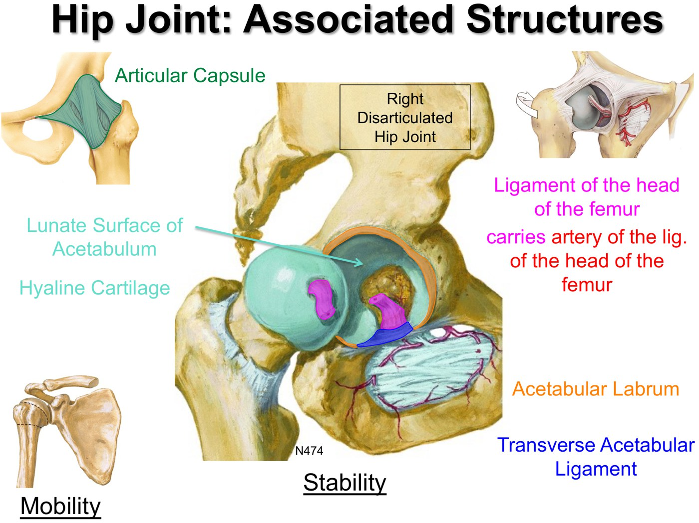
Inside the hip joint. Slide from the deck (Netter).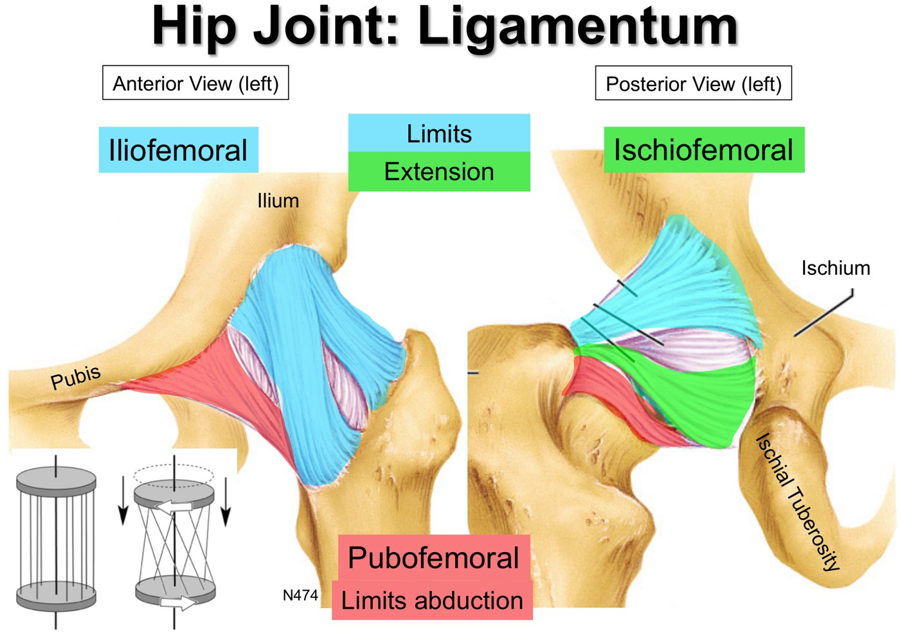
The three spiral ligaments. Slide from the deck (Netter).The ligaments run in a spiral. Moving into extension (and medial rotation) twists them tight, which screws the femoral head into the acetabulum, like wringing out a towel. That locks the joint for "quiet" standing with little muscle work.
Blood Supply of the Femoral Head
| Artery | Contribution |
|---|---|
| Medial circumflex femoral (from the profunda femoris) | The most significant supply to the head and neck, via retinacular arteries running up the neck |
| Lateral circumflex femoral (from the profunda femoris) | The rest of the circumflex supply |
| Artery of the ligament of the head (from the obturator artery) | The main supply in children, while the growth plate between head and neck is open; only minor in adults |
| Inferior gluteal artery | Anastomoses with the circumflex arteries: collateral circulation if the proximal femoral artery is blocked |
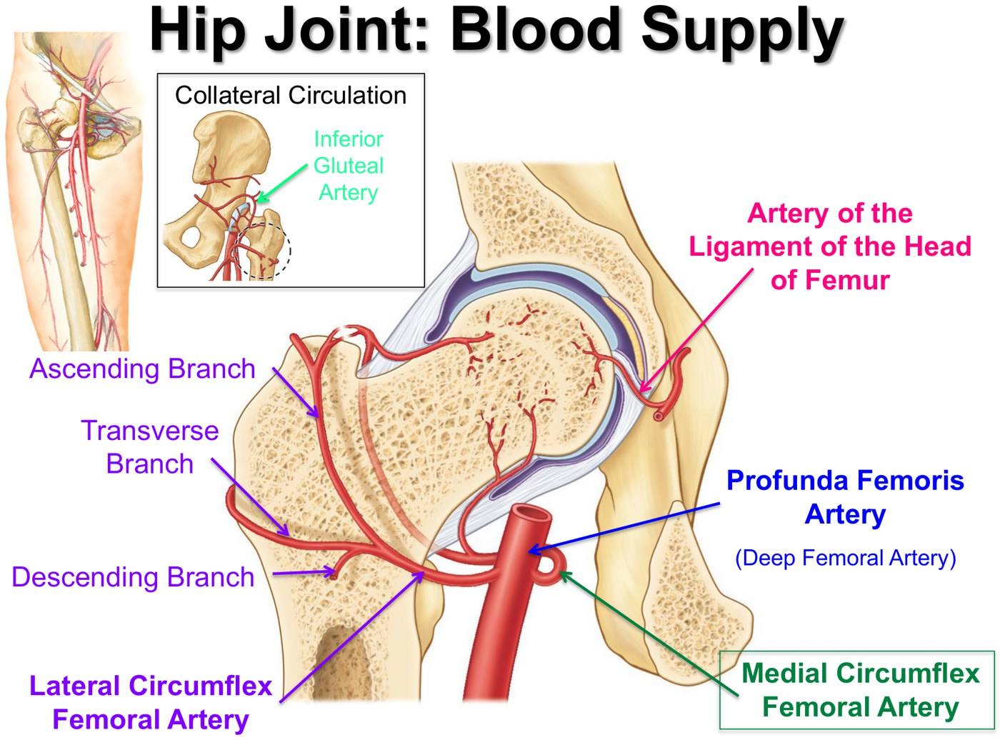
A femoral neck fracture cuts the circumflex supply running up the neck, leaving only the artery of the ligament of the head, which is usually inadequate in adults. The head can die (avascular necrosis) and collapse, often needing a total hip replacement. These fractures are especially common in women over 60 with osteoporosis.
| Hip problem | Key points |
|---|---|
| Congenital dislocation | A malformed acetabulum and/or femur at birth: less congruent, less stable |
| Acquired (traumatic) dislocation | Uncommon, because the joint is so strong. About 90% are posterior: the "dashboard injury" in a car crash, force driven up the long axis of the femur. The limb looks shorter and medially rotated. Watch the sciatic nerve (stretched or compressed), bleeding from the circumflex arteries, and avascular necrosis. |
| Osteoarthritis | Common with age: cartilage, subchondral bone, synovium and soft tissues change (a thick subchondral plate, osteophytes, deformed bone). Conservative care rarely lasts; severe OA gets a hip replacement. |
Knowledge checks
Bo Jackson's hip dislocated posteriorly in a 1990 NFL playoff tackle; after surgery and rehab he had avascular necrosis and needed a hip replacement. Which artery was disrupted? → the medial circumflex femoral artery. The injury ended his football career; he went on to Major League Baseball.
A disarticulated cadaveric hip (a photograph, so not shown): the femoral head, the lesser trochanter (a small bump on the back), the acetabular labrum (the fibrocartilage rim) and the cut ligament of the head of the femur.
Hip Fractures
Dr. Cassidy's recording.
Why Hip Fractures Matter
"Hip fracture" really means a proximal femur fracture; you can't fracture a joint. They're a big deal because they're common, especially with age, and carry huge morbidity, much of it from immobility.
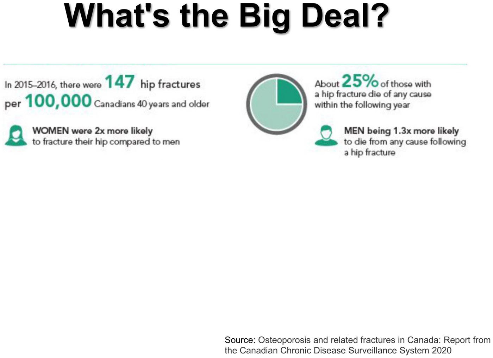
| Risk = things that make you fall… | …plus things that make bone break (osteoporosis) |
|---|---|
| Intrinsic: previous falls; comorbidities (peripheral vascular disease, COPD, stroke, other weakness); polypharmacy (sedatives, diuretics, psychotropics, antiarrhythmics); poor nutrition; poor eyesight. Extrinsic: clutter, rugs and carpets at home. | The slide's indications for a BMD test (as in Endocrinology): a fragility fracture, long-term glucocorticoids, hypogonadism or early menopause, malabsorption, primary hyperparathyroidism, a parental hip fracture, smoking, heavy alcohol, low weight, rheumatoid arthritis, and everyone 65+ |
Is It a Hip Fracture?
| History (OLDCARS) | Physical exam |
|---|---|
| Onset sudden, after a fall or trauma. Location: the groin or lateral upper thigh (true hip-joint pain is groin pain). Character sharp or a deep ache. Aggravated by movement and weight bearing, alleviated by staying still (sometimes it barely hurts at rest). May radiate to the knee. Severity varies hugely. | Look: the leg is shortened, externally rotated and slightly abducted (a position of comfort, with the hip muscles pulling it there); unable to bear weight. Feel: tenderness over the hip (or not). Move: painful range of motion, painful log roll and straight leg raise. |
In the elderly, think hip fracture even if the pain or the trauma was minimal: these fractures can hide. Image with an AP pelvis and hip x-ray (follow the cortex around the head, neck, trochanters and shaft on both sides for any break or loss of the smooth curves). If it's negative but suspicion stays high, get a CT, which is more sensitive.
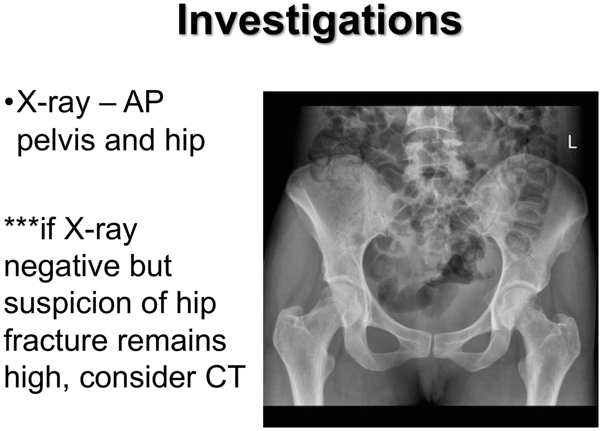
A normal AP pelvis. Slide from the deck.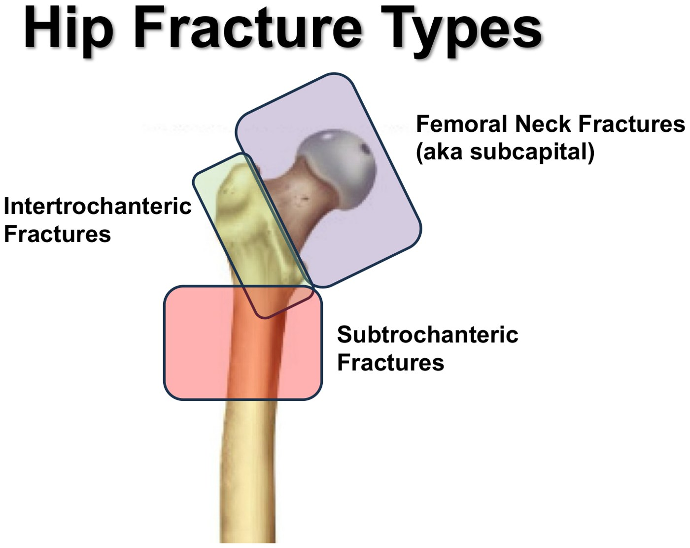
Three zones: neck (subcapital), intertrochanteric, subtrochanteric. Slide from the deck.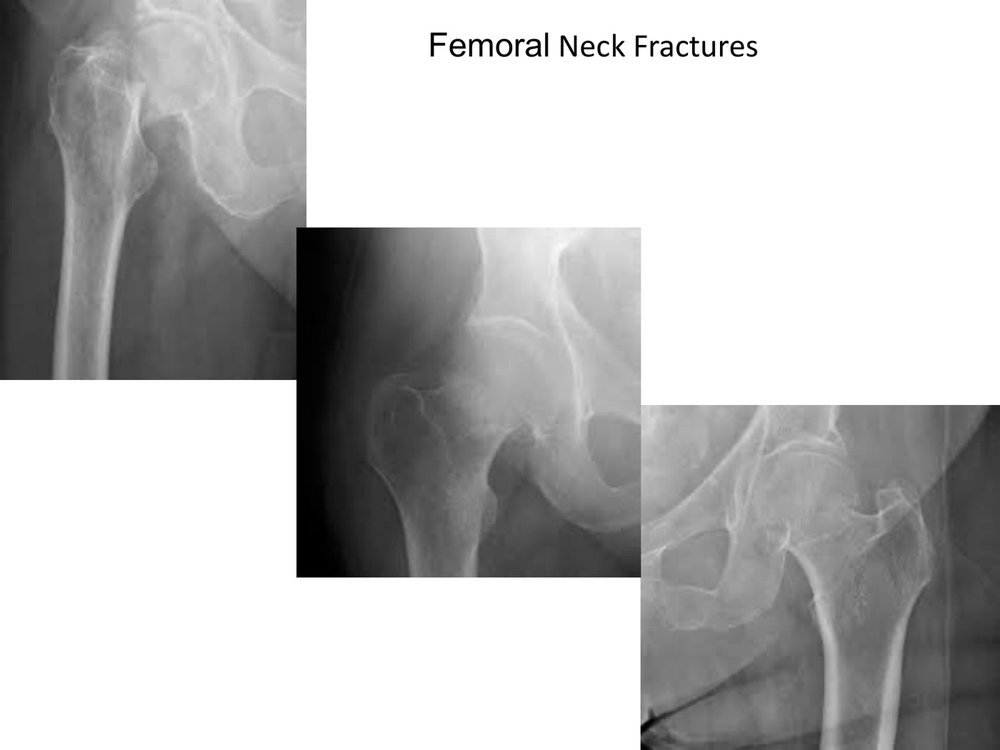
Femoral neck fractures: a collapsed neck, a sharp step in the head–neck curve, a tilted head. Slide from the deck.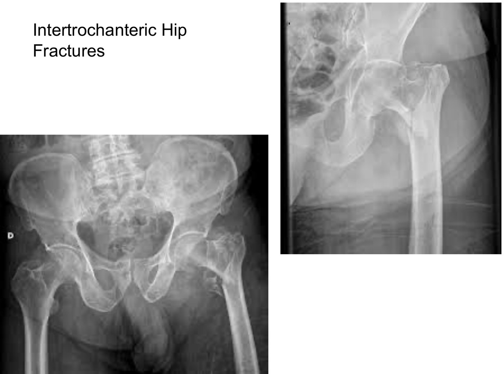
Intertrochanteric fractures, one with the lesser trochanter broken off. Slide from the deck.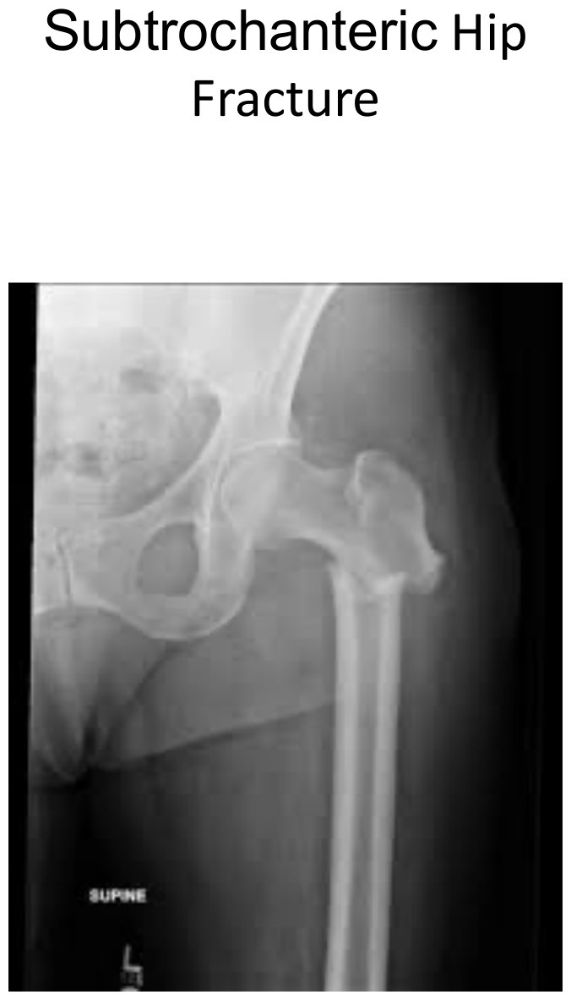
Subtrochanteric, clearly displaced. Slide from the deck.The Approach to a Suspected Hip Fracture
The history, exam and imaging above.
Especially in the young, whose hip fractures come from high-velocity trauma: ABCs, then look for a pelvic fracture, vascular injury or nerve injury. Check distal pulses and sciatic nerve function (tibial and peroneal: can the foot dorsiflex and plantarflex?).
Why did they fall? Recent illness, poor eating or drinking, syncope or presyncope, cardiac history; consider a CBC (anemia), electrolytes, troponin, an ECG (atrial fibrillation) and a chest x-ray (pneumonia). Why did they break? A fall from standing shouldn't break a healthy femur: look for a pathologic fracture (primary bone tumour or metastasis), and treat a low-trauma break as a fragility fracture, which automatically qualifies as osteoporosis; start the workup.
See the table below.
Prevent complications and regain function.
Managing the Fracture
The vast majority get surgery, within 24–48 hours (the standard of care), because it gets people back to weight bearing sooner and cuts the complications of lying still. You can't cast a proximal femur, so non-operative care means weeks off their feet. For displaced femoral neck fractures surgery is also needed to protect the femoral head's blood supply.
| Fracture | Treatment |
|---|---|
| Femoral neck, non-displaced | Rarely non-operative (only a very non-displaced fracture, perhaps through one cortex, in a poor surgical candidate); maybe screws across the fracture (internal fixation); often arthroplasty |
| Femoral neck, displaced | Arthroplasty, always: a hemiarthroplasty (new femoral head on a stem, press-fit or cemented) is the smaller surgery with a quick recovery; a total arthroplasty (head + acetabulum) if the joint was already arthritic. The choice is the surgeon's. |
| Intertrochanteric and subtrochanteric | Essentially all surgical (they're unstable), with the same operation: an intramedullary nail down the femoral canal, locked with screws. That's an ORIF: open, reduce the fragments, fix them internally. |
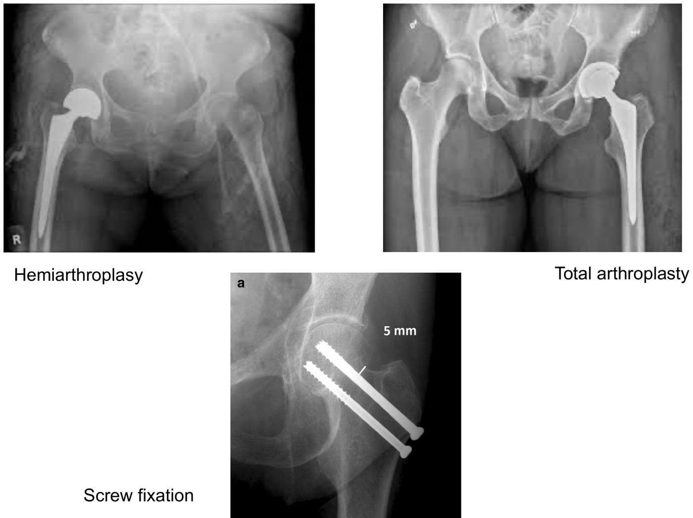
Hemiarthroplasty, total arthroplasty, screws. Slide from the deck.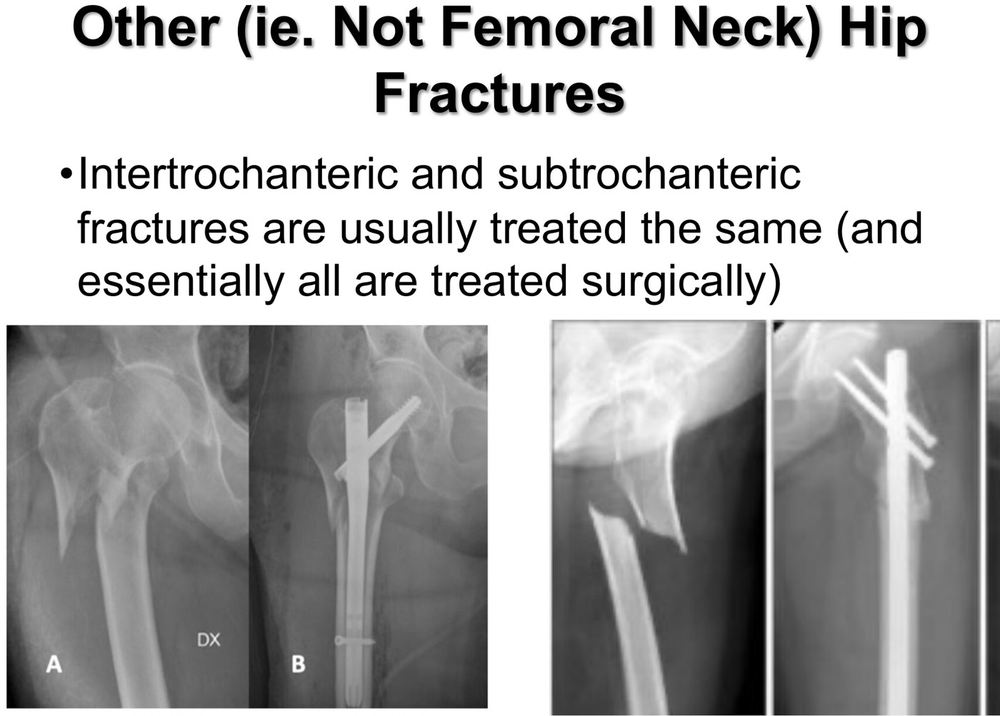
An intramedullary nail for inter- and subtrochanteric fractures. Slide from the deck.| After surgery: complications (all tied to immobility) | Plan |
|---|---|
| VTE: common after hip fracture | Prophylaxis: LMWH for 14–30 days (Thrombosis Canada) |
| Pneumonia: a common cause of death after hip fracture (anaesthesia, immobility, or the reason they fell) | Watch for it |
| Muscle atrophy: shockingly fast in bed | Bed exercises; get moving |
| Infection: the wound, and UTI rises with immobility | Watch for it |
| Delirium: a high-risk time in older patients | Reduce the risk; treat it |
| Pressure sores | Keep them moving; nursing checks |
Early mobilization with interdisciplinary rehab (inpatient or outpatient, PT and OT) is the best strategy against complications. Falls prevention: optimize comorbidities, fix the home environment, strength and balance work, and a gait aid (a walker at first). Fracture prevention: check vitamin D and calcium, work up secondary osteoporosis, and consider antiresorptive therapy.
Knowledge checks
An 86-year-old falls at home, can't get up and can't bear weight on the left. How do you expect the left leg to lie? → abducted and externally rotated, and it looks shortened.
Treatment for a displaced femoral neck fracture? → arthroplasty (hemi or total). Left alone it's at high risk of avascular necrosis; screws are for non-displaced neck fractures; an intramedullary nail is for inter- and subtrochanteric fractures. (The module's answer key marks screw fixation, but its own feedback and the lecture say arthroplasty.)
Built from Drs. Charys Martin and Caitlin Cassidy's “Clinical Approach to the Hip Joint” module: the two recordings (osteology and joint features of the hip; hip fractures), the knowledge checks and their feedback video, the 36-slide detailed deck and Dr. Martin's notes. Left out and described in text: the cadaveric hip knowledge check and the photo of a patient's legs on the presentation slide. Notes: the displaced femoral neck knowledge check's answer key says screw fixation, contradicting its feedback and the slides (arthroplasty), which are followed. A fractured hip lies externally rotated and abducted; a posteriorly dislocated hip lies medially rotated; both look short. The notes give the joint's dynamic "screwing" in extension and medial rotation; the recording just says extension. Caption corrections: OLDCARS (“old car's acronym”), subcapital (“sub capital”), intertrochanteric (“intra trochanter”, “intra took enteric”), subtrochanteric (“septuagenarian”, “stroking tarragon”), intramedullary nail (“intermediary nail”), medullary cavity (“imaginary cavity”), hemiarthroplasty (“hemming arthroplasty”, “any arthroplasty”), ORIF (“orifice”), antiresorptive (“anti restrictive”), avascular necrosis (“a vascular necrosis”), plantar flexion (“planter flexion”), gait aid (“gate aid”), cadaveric specimen (“category specimen”), fibrocartilaginous (“fiber cartilaginous”), ischial spine (“issue of spine”) and sacrospinous (“sacrum spinous”).